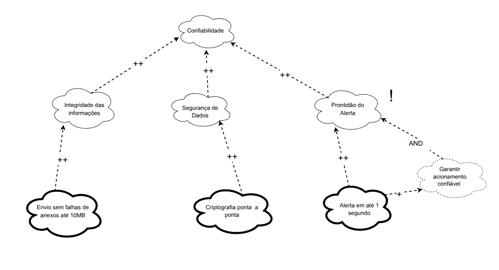

Versão 2.1
NFR Framework
Introdução
O NFR framework criado por (CHUNG et al., 2000), foi adotado por propor uma abordagem específica para o tratamento de Requisitos Não-Funcionais e fornecer uma execelente representação para expressar esses requisitos.
Este framework é utilizado neste trabalho para representar os requisitos não-funcionais conforme sua priorização neste artefato, onde estes requisitos serão expressados através de um grafo SIG (Softgoal Interdependency Graph) uma forma de visualização do NFR framework.
Atenção!
O conteúdo deste tópico poderá sofrer alterações ao longo da Disciplina de Requisitos de Software. Portanto, as tabelas serão organizadas iniciando pela versão mais recente e finalizando com a versão mais antiga.
Integrantes que atuaram no desenvolvimento do artefato
Esta tabela inicial terá somente os artefatos de alta relevância que cada integrante do projeto desenvolveu. O versionamento completo encontra-se ao final do artefato.
Tabela de Contribuição
| Nome | Função |
|---|---|
| Felipe Freire | Autor da Introdução, Metodologia, NFR Geral, NFR Usabilidade e Acessibilidade: [ Figura 9 ], [ Figura 10 ] e fez 2 cartões de especificação |
| Mateus Bastos | Autor dos NFRs de Confiabilidade e Segurança figura "SIG Adaptado" e: [ Figura 8 ], [ Figura 6 ], fez 2 cartões de especificação e revisou o artefato |
| Daniel Rodrigues | Autor dos NFRs de Desempenho figura "SIG Adaptado" e: [ Figura 7 ] e fez 2 cartões de especificação |
| Vitor Pereira | Autor de 2 cartões de especificação |
| Gabriel Lima | Autor de 2 cartões de especificação |
| Leonardo de Melo | Autor de 2 cartões de especificação |
| Arthur Carvalho | Autor de 2 cartões de especificação |
Legenda:
Nome – participante da técnica.
Função – papel desempenhado na priorização.
Observação
Frizando claramente que as contribuições de cada integrante ainda que mínimas são ainda sim muito relevantes no desenvolvimento do artefo, considere verificar o histórico de versão.
Softgoal Interdependency Graph
O Softgoal Interdependency Graph (SIG) é uma representação visual do funcionamento do NFR Framework. Ele serve para registrar graficamente o posicionamento da equipe de desenvolvimento em relação aos softgoals (objetivos não funcionais) e demonstrar, de forma clara, as interdependências entre eles.
Tipos de Softgoal
Para entender o SIG, é essencial compreender o que é um NFR Softgoal: trata-se de um objetivo que não possui critérios de satisfação claramente definidos. Em outras palavras, é uma meta abstrata, cuja realização é avaliada posteriormente.
Esses softgoals podem assumir formas distintas:
- Softgoals NFR: são metas genéricas como segurança, usabilidade ou desempenho.
- Softgoals de Operacionalização: representam maneiras concretas de atingir um softgoal abstrato, podendo ser tratados como funcionalidades do sistema.
- Softgoals de Afirmação: são declarações em linguagem natural que reforçam ou justificam determinadas decisões no modelo.
A Figura 1 ilustra esses diferentes tipos de softgoal.
Figura 1 - Tipos de Softgoal

Fonte: (SILVA, 2019)
Interdependências
As interdependências representam as conexões entre os softgoals e podem ser divididas em duas categorias principais: decomposições e contribuições.
Decomposições
Decomposições são divisões de softgoals em partes menores, podendo ocorrer em todos os níveis: softgoals NFR, de operacionalização ou de afirmação. Elas ajudam a esclarecer objetivos e detalhar soluções. Existem quatro tipos principais:
- Decomposição NFR: permite subdividir grandes metas em componentes mais simples e claros, facilitando a priorização.
- Decomposição de Operacionalização: especifica uma solução genérica em soluções mais detalhadas.
- Decomposição de Afirmação: reforça ou refuta argumentos utilizados no projeto.
- Decomposição de Priorização: especial, pois refina um softgoal em outro de mesma natureza, atribuindo, porém, diferentes prioridades.
Figura 2 - Tipos de Decomposição

Fonte: (SILVA, 2019)
Contribuições
No modelo NFR, os softgoals podem influenciar outros — essa influência pode ser positiva ou negativa, total ou parcial. Os principais tipos de contribuição são:
- AND: todos os sub-softgoals precisam ser satisfeitos para que o objetivo principal seja alcançado.
- OR: basta que um dos sub-softgoals seja satisfeito.
- MAKE (++): contribuição fortemente positiva.
- BREAK (--): contribuição fortemente negativa.
- HELP (+): contribuição positiva parcial.
- HURT (-): contribuição negativa parcial.
- UNKNOWN (?): o tipo de contribuição é desconhecido.
- EQUALS: existe uma equivalência entre a satisfação dos softgoals.
- SOME: sabe-se a direção da contribuição, mas não sua intensidade.
Propagação de Impactos
A propagação de impactos diz respeito à forma como alterações em um softgoal podem influenciar outros requisitos não funcionais interligados. Compreender essas relações é crucial para avaliar prioridades, resolver conflitos e tomar decisões mais embasadas.
Os impactos podem ser representados por:
- ✓ (satisfeito): contribuição positiva direta.
- 𝒲+ (fracamente satisfeito): impacto positivo, mas com menor intensidade.
- X (negado): impacto negativo que inviabiliza outro requisito.
- 𝒲- (fracamente negado): impacto negativo moderado.
- 🗲 (conflitante): existe um conflito entre os objetivos, com efeitos positivos e negativos simultâneos.
- u (indeterminado): não há informações suficientes para avaliar o impacto.
Metodologia
Cada integrante do projeto obteve dois requisitos não-funcionais obtido através das técnicas de priorização e validados com um usuário do aplicativo, onde cada integrante fez de forma remota ou presencial. Houve também uma criterização a respeito de cada funcionalidade do aplicativo que cada integrante ficou responsável que pode ser analisada na tabela 0 a seguir:
Tabela 0: Separação das Funcionalidades do aplicativo por integrante
| Funcionalidade | Integrante Responsável |
|---|---|
| Registrar Telefone | Arthur |
| Registrar Pessoa de Confiança | Felipe |
| Emitir Alerta | Daniel |
| Celulares com Restrição | Gabriel |
| Registrar Boletim | Mateus |
| Perfil | Leonardo |
| Buscar Dispositivo | Vitor |
Autor: Felipe das Neves
Cartão de Especificação
Os cartões de especificação a seguir, Tabelas de 1 a 6, foram utilizados para definir os Requisitos Não-Funcionais a serem utilizados na confecção dos NFR Frameworks.
Tabela 1: Cartão de Especificação (Boletim de ocorrência - Usabilidade)
| Campo | RNF01 |
|---|---|
| Nº Requisito: | 1 |
| Classificação: | Usabilidade |
| Descrição: | O sistema deve apresentar a confirmação de envio do boletim com linguagem clara e acessível, incluindo número de protocolo visível por no mínimo 10 segundos. |
| Justificativa: | Garantir que o usuário compreenda que o boletim foi enviado com sucesso e que possa anotar ou copiar o número de protocolo sem pressa, melhorando a experiência e a confiança no sistema. |
| Origem do Requisito: | Entrevista com usuário (Arthur) |
| Critério de Aceitação: | Após o envio do boletim, o número de protocolo deve ser exibido em destaque, com opção de cópia e visibilidade mínima de 10 segundos. |
| Dependências: | Envio bem-sucedido do boletim de ocorrência |
| Prioridade: | Alta |
| Conflitos: | Nenhum |
| História: | US12 |
Tabela 2: Cartão de Especificação (Boletim de ocorrência - Desempenho e Confiabilidade)
| Campo | RNF02 |
|---|---|
| Nº Requisito: | 2 |
| Classificação: | Desempenho / Confiabilidade |
| Descrição: | O sistema deve permitir o envio de anexos com limite máximo de 10 MB por arquivo, aceitando os formatos JPG, PNG e PDF. |
| Justificativa: | Evitar sobrecarga no sistema e garantir que os arquivos anexados sejam compatíveis e leves o suficiente para envio eficiente e seguro. |
| Origem do Requisito: | Entrevista com usuário (Arthur) e análise técnica |
| Critério de Aceitação: | O sistema deve bloquear arquivos que ultrapassem o limite ou estejam em formato não aceito, exibindo mensagem clara e impedindo o envio. |
| Dependências: | Funcionalidade de envio de boletim com anexos |
| Prioridade: | Média |
| Conflitos: | Nenhum |
| História: | US08 |
Autor: Mateus Bastos
As tabelas 3 e 4 são referentes a funcionalidade de Resgistrar pessoa de confiança. Critério do QFD para a criterização da prioridade, aliada os RNFs obtidos do questionário.
Tabela 3: Cartão de Especificação (Pessoa de confiança - Funcionalidade)
| Campo | RNF03 |
|---|---|
| Nº Requisito: | 3 |
| Classificação: | Funcionalidade |
| Descrição: | Para cada Pessoa de Confiança listada, deve haver uma opção acessível para iniciar o processo de remoção (ex: um ícone de lixeira, um menu de opções ao manter pressionado). |
| Justificativa: | Permitir que o usuário mantenha sua lista de Pessoas de Confiança atualizada e relevante, removendo contatos que não são mais desejados ou apropriados para essa função, assegurando que apenas as pessoas corretas permaneçam com esse status. |
| Origem do Requisito: | Definição da Funcionalidade 'Gerenciar Pessoas de Confiança' / User Story US36 |
| Critério de Aceitação: | Para cada contato exibido na lista de Pessoas de Confiança, uma opção de remoção (ex: ícone de lixeira ou item em menu de contexto) deve estar acessível. Ao ser acionada, o sistema deve solicitar confirmação ao usuário e, se confirmada, o contato deve ser removido permanentemente do sistema e a lista atualizada. |
| Dependências: | Pessoas já cadastradas na lista de confiança |
| Prioridade: | Alta |
| Conflitos: | Nenhum conflito direto identificado. O risco de remoção acidental deve ser mitigado pela etapa de confirmação. |
| História: | US36 |
Autor: Felipe das Neves
Tabela 4: Cartão de Especificação (Acessibilidade - Dark Mode)
| Campo | RNF04 |
|---|---|
| Nº Requisito: | 4 |
| Classificação: | Usabilidade / Acessibilidade / Funcionalidade |
| Descrição: | O aplicativo deve oferecer um modo escuro (dark mode) para maior conforto visual. |
| Justificativa: | Proporcionar uma melhor experiência de uso em ambientes com pouca luminosidade, reduzir o cansaço visual, atender às preferências de uma parcela de usuário, mesmo que esse requisito tenha sido verificado apenas para a funcionalidade: Registrar pessoa de confiança, tal requisito se extende ou sistema completo. |
| Origem do Requisisto: | Obtido da técnica de elicitação do questionário: RNF05 |
| Critério de Aceitação: | O aplicativo deve possuir uma opção nas configurações que permita ao usuário alternar entre o tema claro (padrão) e o modo escuro. Todos os textos, ícones e elementos interativos devem manter boa legibilidade e contraste adequado no modo escuro, conforme as diretrizes de acessibilidade (ex: WCAG AA). A transição entre os modos deve ser suave e todas as telas do aplicativo devem ser compatíveis. |
| Dependências: | Definição da paleta de cores para o modo claro e escuro. |
| Prioridade: | Baixa |
| Conflitos: | Nenhum |
| História: | 30/06/2025 |
Autor: Felipe das Neves
As tabelas 5 e 6 descrevem, respectivamente, o RNF de manter o layout da tela de Perfil consistente com o restante do app e o RNF de oferecer alto contraste e fonte ajustável, ambos priorizados para melhorar usabilidade e acessibilidade.
Tabela 5: Cartão de Especificação (Perfil – Layout Consistente)
| Campo | RNF05 |
|---|---|
| Nº Requisito: | 5 |
| Classificação: | Usabilidade / Aparência |
| Descrição: | A tela de Perfil deve ter o mesmo visual e organização que as outras telas do aplicativo. Isso inclui posição de título, espaçamento, cores e tamanho de texto. |
| Justificativa: | Usar o mesmo padrão em todas as telas faz com que o usuário saiba onde estão as informações e botões, evitando confusão e facilitando o uso. |
| Origem: | BS38 |
| Critério de Aceitação: | 1. O título “Perfil” aparece com a mesma fonte e cor que os títulos de outras páginas. 2. Foto, nome, e-mail e botão “Editar Perfil gov.br” ocupam posições semelhantes às de outras telas. 3. Botões na tela de Perfil têm aparência e comportamento iguais aos da Home e Configurações (mesma cor e feedback ao clicar). 4. Espaços entre elementos seguem o guia de estilo do aplicativo (distâncias iguais às de outras telas). |
| Dependências: | Guia de estilo do app (cores, fontes, espaçamentos) aprovado pela equipe de design. |
| Prioridade: | Média |
| Conflitos: | Se for necessário adicionar novos elementos (gráficos, listas), será preciso ajustar o layout sem perder a consistência. |
| História: | US14 |
Fonte: Leonardo de Melo
Tabela 6: Cartão de Especificação (Perfil – Alto Contraste e Fonte Ajustável)
| Campo | RNF06 |
|---|---|
| Nº Requisito: | 6 |
| Classificação: | Acessibilidade / Legibilidade |
| Descrição: | A tela de Perfil deve oferecer opção de alto contraste e permitir aumentar ou reduzir o tamanho da fonte. |
| Justificativa: | Isso ajuda quem tem dificuldade para enxergar letras pequenas ou usar o aplicativo em ambientes muito claros ou muito escuros. |
| Origem: | BS43 |
| Critério de Aceitação: | 1. Nas configurações, o usuário escolhe “Contraste Padrão” ou “Alto Contraste” e, imediatamente, a tela de Perfil muda as cores. 2. Nas configurações, o usuário escolhe “Fonte Pequena”, “Fonte Média” ou “Fonte Grande” e o texto do Perfil (nome, e-mail, botões) muda sem cortar nada. 3. No modo “Alto Contraste”, o texto e o fundo na tela de Perfil têm cores claramente diferentes para facilitar a leitura. 4. Ao mudar contraste ou fonte, a tela de Perfil atualiza em até 0,2 segundos, sem precisar fechar o aplicativo. |
| Dependências: | Guia de cores para “Alto Contraste” e opções de tamanho de fonte definidas no guia de estilo. |
| Prioridade: | Baixa |
| Conflitos: | Se alguns ícones não tiverem versão para alto contraste, será necessário trocar esses ícones. Ajustar fonte para “Grande” pode exigir mais espaço na tela. |
| História: | US14 |
Fonte: Leonardo de Melo
As Tabelas 7 e 8 apresentam os requisitos não funcionais (RNF) de usabilidade e segurança no menu "Registrar Telefone", com foco em interface intuitiva e criptografia dos dados, priorizados para garantir uma experiência confiável ao usuário.
Tabela 7: Cartão de Especificação (Registrar Celular – Acessibilidade e Estrutras Claras)
| Campo | RNF07 |
|---|---|
| Nº Requisito: | 7 |
| Classificação: | Usabilidade / Acessibilidade |
| Descrição: | O sistema deve apresentar menus e botões no módulo de Registro de Telefone com estrutura clara e uso de affordances visuais (ícones e feedback gráfico/textual) para indicar as ações disponíveis, como adicionar, editar ou remover um número , com a ideia principal focada no tempo de resposta para o usuário. |
| Justificativa: | Facilitar o uso da funcionalidade por usuários de diferentes perfis (inclusive idosos e pessoas sob estresse), reduzindo ambiguidade visual, evitando erros de uso ao registrar o telefone e ajustando o tempo de resposta visual mais criterioso. |
| Origem do Requisito: | BS36 |
| Critério de Aceitação: | O usuário deve conseguir realizar o cadastro ou exclusão de um telefone utilizando apenas os ícones e textos da interface, sem necessidade de tutorial, com confirmação visual imediata ao final de cada ação e com um tempo de resposta realtivamente bom ( entre 1.4 a 2.4 milesegundos). |
| Dependências: | Tela de Registro de Telefone; Interface gráfica consistente |
| Prioridade: | Alta |
| Conflitos: | Nenhum identificado |
| História: | US01, US06 |
Fonte: Arthur Carvalho
Tabela 8: Cartão de Especificação (Registrar Celular – Segurança e Criptografia)
| Campo | RNF08 |
|---|---|
| Nº Requisito: | 8 |
| Classificação | Segurança / Confiabilidade |
| Descrição | O aplicativo deve garantir criptografia ponta-a-ponta (como AES-256) nos dados transmitidos e armazenados durante o processo de registro de telefone, incluindo o número, código de verificação e identificação do usuário. Nenhuma informação sensível deve ser transmitida em texto claro. |
| Justificativa | Proteger os dados pessoais e garantir que o número de telefone cadastrado e validado não seja interceptado ou alterado por terceiros, alinhando-se à LGPD e às boas práticas de segurança da informação. |
| Origem do Requisito | ADD15 |
| Critério de Aceitação | Toda a comunicação relacionada ao registro de telefone deve utilizar protocolo HTTPS com TLS atualizado. As informações sensíveis devem ser criptografadas e não podem ser recuperadas por interceptação direta da rede. |
| Dependências | Integração com servidor seguro e sistema de autenticação |
| Prioridade | Alta |
| Conflitos | Nenhum |
| História | US06 |
Fonte: Arthur Carvalho
As Tabelas 9 e 10 apresentam os requisitos não funcionais (RNF) de usabilidade e segurança no menu "Emitir Alerta".
Tabela 9: Cartão de Especificação (Emitir alerta-Alerta e Bloqueio)
| Campo | RNF09 |
|---|---|
| Nº Requisito: | 9 |
| Classificação: | Desempenho |
| Descrição: | O sistema deve comunicar alertas aos parceiros com o menor tempo possível, idealmente de forma instantânea. Além disso, bloqueios de sistema ou ações de segurança devem ser efetuados em até 2 minutos após a detecção do evento. |
| Justificativa: | Em cenários críticos, como ameaças à segurança ou violação de dados, é essencial que o alerta seja comunicado imediatamente aos parceiros e que as ações preventivas (como bloqueios) ocorram em tempo adequado para mitigar riscos. |
| Origem: | OBS16 |
| Critério de Aceitação: | 1. Alertas devem ser enviados em até 1 segundo após o evento. 2. Bloqueios devem ocorrer em até 2 minutos da detecção automática ou comando humano. |
| Dependências: | Detecção de evento, canal de comunicação ativo. |
| Prioridade: | Alta |
| Conflitos: | Potencial impacto em consumo de rede e uso de CPU |
| História: | 01/06/2025 |
Fonte: Daniel Rodrigues
Tabela 10: Cartão de Especificação (Páginas-Tempo de Carregamento)
| Campo | RNF10 |
|---|---|
| Nº Requisito: | 10 |
| Classificação: | Desempenho |
| Descrição: | As páginas do sistema devem carregar completamente em até 2 segundos quando acessadas via conexão padrão 4G. |
| Justificativa: | Um tempo de carregamento rápido melhora a experiência do usuário, reduz abandono e é essencial em contextos móveis onde a responsividade é crítica. |
| Origem: | OBS16 |
| Critério de Aceitação: | 1. Em testes com rede 4G padrão, 95% das páginas devem carregar em até 2 segundos. |
| Dependências: | Otimização de backend, compactação de conteúdo, rede 4G disponível |
| Prioridade: | Alta |
| Conflitos: | Pode entrar em conflito com carregamento de recursos pesados (como gráficos) |
| História: | 01/06/2025 |
Fonte: Daniel Rodrigues
As Tabelas 11 e 12 apresentam os requisitos não funcionais (RNF) de usabilidade e segurança no menu "Buscar Aplicativo".
Tabela 11: Cartão de Especificação (Localização - Precisão da localização)
| Campo | RNF11 |
|---|---|
| Nº Requisito: | 11 |
| Classificação: | Segurança |
| Descrição: | O sistema deve fornecer informações de localização do dispositivo com alta precisão, garantindo que os dados exibidos representem fielmente o posicionamento real do dispositivo no mapa. |
| Justificativa: | Garantir a precisão da localização é fundamental para que funcionalidades como rastrear, bloquear ou recuperar o dispositivo sejam eficazes. Isso contribui diretamente para a confiança do usuário no sistema, reduzindo frustrações causadas por erros de posicionamento e garantindo a usabilidade do serviço, especialmente em situações críticas, como perda ou roubo do dispositivo. |
| Origem do Requisito: | BS04, QS01, ST6 |
| Critério de Aceitação: | O sistema deve utilizar fontes de localização de alta precisão, como GPS, Wi-Fi e redes móveis, combinadas quando necessário. A margem de erro aceitável deve ser inferior a 10 metros em ambientes externos e tão precisa quanto possível em ambientes internos. A localização deve ser atualizada em tempo real ou com atraso máximo de 5 segundos. Além disso, o sistema deve informar claramente ao usuário se a precisão da localização está comprometida no momento. |
| Dependências: | Disponibilidade dos serviços de GPS, Wi-Fi e dados móveis no dispositivo e Permissões de localização ativas no dispositivo. |
| Prioridade: | Alta |
| Conflitos: | Nenhum |
| História: | 01/06/2025 |
Fonte: Vitor Bessa
Tabela 12: Cartão de Especificação (Localização- Segurança)
| Campo | RNF12 |
|---|---|
| Nº Requisito: | 12 |
| Classificação: | Segurança |
| Descrição: | Os dados de localização do dispositivo devem ser protegidos contra acessos não autorizados, utilizando criptografia tanto na transmissão quanto no armazenamento. |
| Justificativa: | Informações de localização são altamente sensíveis, pois podem revelar a posição exata do usuário em tempo real. Proteger esses dados garante a privacidade, evita riscos de segurança pessoal e aumenta a confiança dos usuários no sistema. Além disso, estar em conformidade com leis de proteção de dados, como a LGPD, é essencial. |
| Origem do Requisito: | BS04, QS01, ST6 |
| Critério de Aceitação: | - Todos os dados de localização devem ser criptografados em trânsito (durante a comunicação entre cliente e servidor) e em repouso (armazenados no servidor). - O acesso às informações de localização deve ser restrito apenas aos usuários autenticados e autorizados. - Caso haja tentativa de acesso não autorizado, o sistema deve bloquear a tentativa e registrar um log de segurança. - O sistema deve fornecer ao usuário opções para gerenciar as permissões de compartilhamento da sua localização. |
| Dependências: | Implementação de protocolos de segurança e infraestrutura de backend compatível com armazenamento seguro (criptografia de banco de dados, gerenciamento de chaves). |
| Prioridade: | Alta |
| Conflitos: | Nenhum |
| História: | 01/06/2025 |
Fonte: Vitor Bessa
Tabela 13: Cartão de Especificação (Controle de Acesso Seguro)
| Campo | RNF13 |
|---|---|
| Nº Requisito: | 13 |
| Classificação: | Segurança / Funcionalidade |
| Descrição: | O sistema deve implementar controle de acesso baseado em papéis (RBAC), limitando funcionalidades conforme o tipo de usuário (usuário comum, pessoa de confiança, administrador), impedindo o acesso indevido mesmo por rotas alternativas. |
| Justificativa: | Garantir que apenas usuários autorizados possam acessar funcionalidades sensíveis é essencial para prevenir ações indevidas, vazamento de dados e garantir o princípio do menor privilégio, reforçando a segurança do sistema. |
| Origem do Requisito: | Técnicas de brainstorming e análise de documentos de sistemas similares com perfis diferenciados de usuário. Também motivado pela revisão de qualidade solicitada pelo professor. |
| Critério de Aceitação: | O sistema deve: - Ter ao menos três níveis de permissão: usuário comum, pessoa de confiança e administrador; - Restringir funcionalidades conforme o perfil; - Impedir o acesso por manipulação de interface ou chamadas diretas a URLs; - Exibir mensagens de erro claras quando o acesso for negado. |
| Dependências: | RNF04 (Segurança), RNF08 (Autenticação), RF relacionados ao login e uso de funcionalidades sensíveis |
| Prioridade: | Alta |
| Conflitos: | Pode afetar a usabilidade caso o controle seja excessivamente restritivo ou mal comunicado ao usuário. |
| História: | Criado em 05/07/2025 para complementar o RNF07, conforme revisão docente sobre clareza e verificabilidade dos artefatos de segurança. |
Fonte: Mateus Bastos
Tabela 14: Cartão de Especificação (Autenticação Segura)
| Campo | RNF14 |
|---|---|
| Nº Requisito: | 14 |
| Classificação: | Segurança / Funcionalidade |
| Descrição: | O sistema deve implementar mecanismos de autenticação segura, incluindo senha forte e autenticação em dois fatores (2FA), para proteger o acesso às funcionalidades sensíveis do aplicativo. |
| Justificativa: | A autenticação é a primeira barreira de defesa do sistema. Garantir que apenas usuários legítimos acessem o sistema protege informações pessoais e reduz o risco de invasões, fraudes e uso indevido. |
| Origem do Requisito: | Técnicas de brainstorming e análise de aplicativos com autenticação robusta (ex: Signal, Telegram). Revisado após recomendação do professor. Substitui o RNF08. |
| Critério de Aceitação: | O sistema deve: - Solicitar senha forte (mínimo de 8 caracteres, com letras, números e símbolo); - Oferecer autenticação em dois fatores (2FA) nas funcionalidades críticas, como envio de alerta e alteração de dados de confiança; - Realizar bloqueio temporário após 5 tentativas falhas de login; - Exibir mensagens claras para erros de autenticação. |
| Dependências: | RNF04 (Segurança), RNF13 (Controle de Acesso Seguro) |
| Prioridade: | Alta |
| Conflitos: | Pode impactar a usabilidade se os métodos forem excessivamente rigorosos ou mal explicados. |
| História: | Criado em 05/07/2025 como versão revisada e técnica do RNF08 – Autenticação. |
Fonte: Mateus Bastos
Vídeo de Validação com o Usuário
Caso o vídeo não carregue, clique aqui para assistir no YouTube.
Termo de Compromisso Assinado
PDF – 01/06/2025 – Termo de Compromisso e Imagem Assinado
Arquivo disponível em: Cópia do Termo de Consentimento Celular Seguro (PDF)
NFR 0 - Geral
A Figura 2 a seguir demonstra o Softgoal Interdependency Graph para se ter uma visão geral.
Figura 2 - SIG Geral

Fonte: (SILVA, 2019)
No entanto, como o foco é trabalhar apenas com Requisitos Não-Funcionais ainda não implementados pelo aplicativo, adaptou-se o SIG acima para a utilização dos tópicos necessários, conforme a figura 3:
Figura 3 - SIG Geral Adaptado
Fonte: (SILVA, 2019)
Legendas estão conforma a figura 4:
Figura 4 - Legendas SIG
Fonte: (SILVA, 2019)
NFR 01 - Usabilidade
Diagrama de SIG de usabilidade, figura 5:
Figura 5 SIG Usabilidade
Autor: Felipe das Neves
Requisitos Não-Funcionais - Usabilidade
Tabela 13 - Requisitos Não-Funcionais: Usabilidade (Baseada no Modelo Goal-Oriented)
| Código Original (se aplicável) | Nome do Softgoal / Operacionalização | Descrição / Detalhes de Implementação | Tipo de Elemento (Nuvem) |
|---|---|---|---|
| - | Usabilidade | O objetivo geral de facilidade de uso e satisfação do usuário com o aplicativo. | Normal |
| - | Conforto Visual | Garantir que a interface seja agradável e reduza a fadiga ocular do usuário. | Normal |
| - | Satisfação do Usuário | Atender às expectativas e preferências dos usuários, contribuindo para uma experiência positiva. | Normal |
| - | Acessibilidade | Garantir que o aplicativo seja utilizável por pessoas com diferentes habilidades e necessidades. | Normal |
| RNF04 | Oferecer Modo Escuro (Dark Mode) | O aplicativo deve oferecer um modo escuro para maior conforto visual, incluindo todos os textos, ícones e elementos interativos com legibilidade e contraste adequados. A transição deve ser suave e todas as telas compatíveis. | Borda Grossa (Operacionalização) |
| - | Alternar Tema (RNF04.1) | O aplicativo deve possuir uma opção nas configurações para alternar entre os temas claro e escuro. | Normal |
| - | Legibilidade e Contraste Adequados (RNF04.2) | Todos os elementos visuais devem manter boa legibilidade e contraste no modo escuro, conforme diretrizes de acessibilidade (ex: WCAG AA). | Normal |
| - | Transição Suave (RNF04.3) | A mudança entre os modos claro e escuro deve ocorrer de forma fluida. | Normal |
| - | Compatibilidade entre Telas (RNF04.4) | Todas as telas do aplicativo devem ser compatíveis com o modo escuro. | Normal |
| - | Paleta de Cores Definida | Definição prévia da paleta de cores para os modos claro e escuro, essencial para legibilidade. | Tracejada (Dependência/Afirmação) |
| US36 | Confirmação Clara e Acessível de Envio | O sistema deve apresentar a confirmação de envio do boletim com linguagem clara e acessível, incluindo número de protocolo visível por no mínimo 10 segundos. | Normal (Operacionalização) |
| US01, US06 | Clareza e Responsividade em Menus/Botões (Registro) | O sistema deve apresentar menus e botões no módulo de Registro de Telefone com estrutura clara e uso de affordances visuais (ícones e feedback gráfico/textual), focado no tempo de resposta. | Normal (Operacionalização) |
Fonte: Felipe das Neves
Propagação dos Impactos - Usabilidade
A tabela 14 a seguir detalha os softgoals de Usabilidade e como os requisitos e operacionalizações específicas impactam esses objetivos, incluindo as conotações de impacto e rótulos de satisfação conforme definidos no modelo Goal-Oriented.
Tabela 14 - Propagação dos Impactos: Usabilidade
| NFR / Softgoal / Operacionalização | Rótulo/Status Avaliado | Contribuição de/para | Avaliador | Prioridade (se aplicável) |
|---|---|---|---|---|
| Usabilidade | U | - | Felipe das Neves | - |
-- (++) --> Conforto Visual |
W+ | De: Usabilidade |
Felipe das Neves | - |
-- (++) --> Satisfação do Usuário |
W+ | De: Usabilidade |
Felipe das Neves | - |
-- (++) --> Acessibilidade |
W+ | De: Usabilidade |
Felipe das Neves | - |
| Oferecer Modo Escuro (Dark Mode) | W+ (Operacionalização) | Para: Conforto Visual (++) / Satisfação do Usuário (++) |
Felipe das Neves | Baixa (!) |
-- (++) --> Alternar Tema |
- | De: Oferecer Modo Escuro |
Felipe das Neves | - |
-- (++) --> Legibilidade e Contraste Adequados |
- | De: Oferecer Modo Escuro |
Felipe das Neves | - |
-- (?) --> Paleta de Cores Definida |
- | Para: Legibilidade e Contraste Adequados |
Equipe de Design | - |
-- (+) --> Transição Suave |
- | De: Oferecer Modo Escuro |
Felipe das Neves | - |
-- (+) --> Compatibilidade entre Telas |
- | De: Oferecer Modo Escuro |
Felipe das Neves | - |
| Confirmação Clara e Acessível de Envio (US36) | ✓ (Operacionalização) | Para: Usabilidade (++) / Acessibilidade (++) |
Felipe das Neves | - |
| Clareza e Responsividade em Menus/Botões (Registro) (US01, US06) | ✓ (Operacionalização) | Para: Usabilidade (++) / Satisfação do Usuário (++) |
Felipe das Neves | - |
Fonte: Felipe das Neves
NFR 02 - Confiabilidade
A figura 6 a seguir demonstra o SIG de Confiabilidade:
Figura 6 SIG Confiabilidade

Fonte: Mateus Bastos
Requisitos Não-Funcionais - Confiabilidade
Na Tabela 15 a seguir, são descritos os Requisitos Não-Funcionais relacionados à Confiabilidade, levando em consideração aspectos como envio de informações sem falhas, criptografia segura dos dados e acionamento confiável de alertas em situações emergenciais. Esses requisitos foram elaborados com base na modelagem do NFR Framework para o aplicativo Celular Seguro.
Tabela 15 - Requisitos Não-Funcionais: Confiabilidade
| Código | Nome | Descrição |
|---|---|---|
| RNF01 | Estabilidade e Confiabilidade Operacional | O aplicativo deve funcionar de maneira estável e confiável em momentos de emergência e sob condições de uso normais, garantindo a execução ininterrupta das suas funções essenciais. |
| RNF02 | Envio de Anexos com Integridade | O sistema deve permitir o envio de arquivos (PDF, JPG, PNG) de até 10MB, garantindo a integridade dos dados transmitidos, sem falhas ou perdas. |
| RNF07 | Disponibilidade do Serviço (24x7) | O serviço Celular Seguro deve estar disponível para todos os cidadãos brasileiros 24 horas por dia, 7 dias por semana, sem interrupções planejadas, para garantir acesso constante. |
| RNF21 | Verificação de Integridade de Dados | O sistema deve realizar verificação da integridade de dados armazenados no drive local através de checksums, para prevenir corrupção e garantir a validade das informações. |
| RNF26 | Robustez contra Entradas Inválidas | O aplicativo deve responder corretamente e de forma resiliente mesmo diante de entradas erradas ou inesperadas do usuário, sem travar ou apresentar comportamentos inconsistentes. |
Fonte: Mateus Bastos
Propagação dos Impactos - Confiabilidade
Tabela 16 - Propagação dos Impactos: Confiabilidade
| NFR / Softgoal | Impacto | Avaliador |
|---|---|---|
| Confiabilidade | 𝒲+ | Mateus Bastos |
| Garantir envio de anexos confiável | 𝒲+ | Mateus Bastos |
| Garantir criptografia de dados | 𝒲+ | Mateus Bastos |
| Garantir acionamento confiável | 𝒲+ | Mateus Bastos |
| Prevenção de falhas no envio | 𝒲+ | Mateus Bastos |
| Comunicação de alertas em até 1s | ✓ | Mateus Bastos |
| Criptografia ponta-a-ponta (AES-256) | ✓ | Mateus Bastos |
| Uso de protocolo HTTPS/TLS | ✓ | Mateus Bastos |
| Reação ao evento em até 2 minutos | ✓ | Mateus Bastos |
| Arquivos até 10MB (JPG, PNG, PDF) | ✓ | Mateus Bastos |
| Falha no envio acima de 10MB | X | Mateus Bastos |
Fonte: Mateus Bastos
NFR 03 - Desempenho
A figura 7 a seguir demonstra o SIG de Desempenho:
Figura 7 - SIG Desempenho
Fonte: Daniel Rodrigues
Requisitos Não-Funcionais - Desempenho
Na Tabela 17, estão listados os RNF presentes no NFR Famework de Desempenho:
Tabela 17 - Requisitos Não-Funcionais
| RNF (Fonte) | Descrição | Classificação | Origem |
|---|---|---|---|
| Tempo de Resposta | O sistema deve possuir uma limitação superior do tempo de processamento de uma requisição. | Desempenho | Desempenho |
| Infraestrutura | O sistema deve possuir uma infraestrutura para processar os dados. | Desempenho | Tempo de Resposta |
| Servidores | O sistema deve possuir servidores para perdurar os dados. | Desempenho | Infraestrutura |
| Manutenção em tempo real | O sistema deve ser capaz de realizar a manutenção dos servidores e de outros aspectos da infraestrutura. | Desempenho | Servidores e Infraestrutura |
Fonte: Daniel Rodrigues
Propagação dos Impactos - Desempenho
Na Tabela 18, está presente a avaliação da propagação dos impactos referentes à Figura x.
Tabela 18 - Impactos Desempenho
| NFR | Impacto | Avaliador |
|---|---|---|
| Desempenho | ⚡ | Daniel Rodrigues |
| Envio de Alertas Imediato | ⚡ | Daniel Rodrigues |
| Bloqueio em até 2 minutos | ✓ | Daniel Rodrigues |
| Carregamento em até 2s (4G) | ⚡ | Daniel Rodrigues |
| Precisão da Detecção | ↘/- | Daniel Rodrigues |
| Segurança | ↘/+ | Daniel Rodrigues |
| Infraestrutura Móvel | ↘/+ | Daniel Rodrigues |
| Consumo de Bateria | ✗ | Daniel Rodrigues |
| Processamento Offline | ↘/- | Daniel Rodrigues |
| Usabilidade em Redes Lentas | ✗ | Daniel Rodrigues |
| Manutenção em Tempo Real | ✓ | Daniel Rodrigues |
| Escalabilidade (Crescimento) | ↘/+ | Daniel Rodrigues |
Fonte: Daniel Rodrigues
NFR 04 - Segurança
Abaixo na figura 8 está o SIG de Segurança:
Figura 8: Sig Segurança
Fonte: Mateus Bastos
Requisitos Não-Funcionais - Segurança
A seguir, são apresentados os requisitos não funcionais específicos para o NFR de Segurança do projeto "Celular Seguro", .
Tabela 19 - Requisitos Não Funcionais: Segurança
| Código | Nome | Descrição |
|---|---|---|
| RNF09 | O aplicativo e a plataforma devem seguir requisitos de segurança da informação: conexão criptografada, proteção de dados conforme LGPD. | O aplicativo deve garantir a segurança da informação através de conexão criptografada (TLS 1.3) e proteção de dados em repouso (AES-256), conforme a LGPD. |
| RNF18 | Autenticação multifator (2FA) com fallback via SMS. | O sistema deve suportar e oferecer autenticação multifator (2FA) para todos os usuários, com fallback via SMS. A 2FA deve ser obrigatória para acessos críticos, utilizando o Gov.br. |
| RNF19 | Logs de auditoria imutáveis e armazenados por no mínimo 1 ano. | O sistema deve gerar e armazenar logs de auditoria imutáveis de eventos de segurança por no mínimo 1 ano, para garantir rastreabilidade e conformidade. |
| RNF20 | Política de privacidade clara e facilmente acessível dentro do app. | O aplicativo deve disponibilizar uma política de privacidade clara e facilmente acessível, detalhando a coleta, armazenamento e uso de dados em conformidade com a LGPD. |
| RNF24 | Atualizações automáticas de segurança e correções de vulnerabilidades em até 24 horas. | O sistema deve aplicar atualizações automáticas de segurança e correções de vulnerabilidades críticas em até 24 horas após a disponibilidade, visando proteção contínua contra novas ameaças. |
Fonte: Mateus Bastos
Propagação dos Impactos - Segurança
Na Tabela 20, está presente a avaliação da propagação dos impactos referentes à Figura 8 (SIG da Segurança).
Tabela 20 – Impactos Segurança
| NFR | Impacto | Avaliador |
|---|---|---|
| Segurança | 𝒲+ | Mateus Bastos |
| Criptografia AES-256 | 𝒲+ | Mateus Bastos |
| TLS 1.3 para dados em trânsito | 𝒲+ | Mateus Bastos |
| Conformidade com LGPD | 𝒲+ | Mateus Bastos |
| Controle de Acesso Seguro | 𝒲+ | Mateus Bastos |
| Papéis definidos (RBAC) | ✓ | Mateus Bastos |
| Permissões específicas para emissão de alertas e acesso a dados | ✓ | Mateus Bastos |
| Autenticação Segura | 𝒲+ | Mateus Bastos |
| Login gov.br + senha | ✓ | Mateus Bastos |
| Autenticação 2FA | ✓ | Mateus Bastos |
| Resposta a Tentativas de Acesso Indevido | 𝒲+ | Mateus Bastos |
| Mecanismo de bloqueio após 5 tentativas inválidas | ✓ | Mateus Bastos |
| Detecção de comportamento suspeito no login | ✓ | Mateus Bastos |
| Alerta ao Titular sobre tentativas de acesso | ✓ | Mateus Bastos |
| Mitigação de acessos indevidos por tentativa de login | 𝒲+ | Mateus Bastos |
Fonte: Mateus Bastos
NFR 05 - Acessibilidade
A figura 9 a seguir demonstra o SIG de Acessibilidade:
Figura 9 - SIG Acessibilidade
Fonte: Felipe das Neves
Requisitos Não-Funcionais - Acessibilidade
Tabela 21 - Requisitos Não-Funcionais: Acessibilidade
| Código Original (se aplicável) | Nome do Softgoal / Operacionalização | Descrição / Detalhes de Implementação | Tipo de Elemento (Nuvem) |
|---|---|---|---|
| - | Acessibilidade | O objetivo geral de garantir que o aplicativo seja utilizável por pessoas com as mais diversas habilidades e necessidades, incluindo o uso de tecnologias assistivas. | Normal |
| - | Previsibilidade da Interface | A interface do usuário deve ser consistente e previsível em seu layout e comportamento para reduzir a carga cognitiva e auxiliar a navegação. | Normal |
| US14 / RNF05 | Manter Layout Consistente | A interface da tela de Perfil deve manter o mesmo visual e organização (título, espaçamento, cores, tamanho de texto) que as demais telas do aplicativo. | Borda Grossa (Operacionalização) |
| - | Título Consistente (RNF05.1) | O título 'Perfil' deve aparecer com a mesma fonte e cor que os títulos de outras telas. | Normal |
| - | Posição Elementos Similares (RNF05.2) | Foto, nome, e-mail e botão 'Editar Perfil gov.br' devem ocupar posições semelhantes às de outras telas. | Normal |
| - | Aparência e Comportamento Botões (RNF05.3) | Botões na tela de Perfil devem ter aparência e comportamento iguais aos de outras telas (Home e Configurações). | Normal |
| - | Espaçamento Consistente (RNF05.4) | Espaços entre elementos devem seguir o guia de estilo do aplicativo (distâncias iguais às de outras telas). | Normal |
| - | Guia de Estilo do App Aprovado | Artefato com diretrizes de cores, fontes e espaçamentos aprovado pela equipe de design, essencial para a consistência visual. | Tracejada (Dependência/Afirmação) |
| RNF04 (Parte) | Legibilidade e Contraste Adequados | Todos os elementos visuais devem manter boa legibilidade e contraste no modo escuro, conforme diretrizes de acessibilidade (ex: WCAG AA). | Normal (Reaproveitado/Contribuinte) |
Fonte: Felipe das Neves
Propagação dos Impactos - Acessibilidade
A tabela a seguir detalha os softgoals de Acessibilidade e como os requisitos e operacionalizações específicas impactam esses objetivos, incluindo as conotações de impacto e rótulos de satisfação conforme definidos no modelo Goal-Oriented.
Tabela 22 - Propagação dos Impactos: Acessibilidade
| NFR / Softgoal / Operacionalização | Rótulo/Status Avaliado | Contribuição de/para | Avaliador | Prioridade (se aplicável) |
|---|---|---|---|---|
| Acessibilidade | W+ | De: Usabilidade |
Felipe das Neves | - |
-- (++) --> Previsibilidade da Interface |
W+ | De: Acessibilidade |
Felipe das Neves | - |
| Manter Layout Consistente (RNF05) | W+ (Operacionalização) | Para: Previsibilidade da Interface (++) / Acessibilidade (++) |
Felipe das Neves | Média (!) |
-- (++) --> Título Consistente |
- | De: Manter Layout Consistente |
Felipe das Neves | - |
-- (++) --> Posição Elementos Similares |
- | De: Manter Layout Consistente |
Felipe das Neves | - |
-- (++) --> Aparência e Comportamento Botões |
- | De: Manter Layout Consistente |
Felipe das Neves | - |
-- (++) --> Espaçamento Consistente |
- | De: Manter Layout Consistente |
Felipe das Neves | - |
-- (?) --> Guia de Estilo do App Aprovado |
- | Para: Manter Layout Consistente |
Equipe de Design | - |
| Legibilidade e Contraste Adequados (RNF04) | W+ (Parte da Oper.) | Para: Acessibilidade (++) |
Felipe das Neves | - |
Fonte: Felipe das Neves
NFR 06 - Completo
A figura 10 a seguir demonstra o SIG completo da aplicação "Celular Seguro:
Figura 10 - SIG Completo
Fonte: Felipe das Neves
Requisitos Não-Funcionais Utilizados para o Desenvolvimento do NFR
A Tabela 21 a seguir lista os Requisitos Não-Funcionais aplicáveis à tela Registar Pessoa de Confiança.
Tabela 8 - Requisitos Não-Funcionais
| ID | Descrição | Rastreabilidade | Implementação |
|---|---|---|---|
| RNF01 | Confirmação clara e acessível de envio do boletim, incluindo número de protocolo visível por no mínimo 10 segundos. | — | Não |
| RNF02 | Envio de anexos com limite máximo de 10 MB por arquivo, aceitando JPG, PNG e PDF. | — | Não |
| RNF03 | Opção acessível para iniciar o processo de remoção de Pessoa de Confiança. | BS23 | Não |
| RNF04 | Modo escuro (dark mode) para maior conforto visual. | BS4 | Não |
| RNF05 | Layout consistente na tela de Perfil. | BS2 | Não |
| RNF06 | Opção de alto contraste e fonte ajustável na tela de Perfil. | OBS18 | Não |
| RNF07 | Menus e botões claros e responsivos no Registro de Telefone. | BS1 | Não |
| RNF08 | Criptografia ponta-a-ponta nos dados do Registro de Telefone. | BS3 | Não |
| RNF09 | Conformidade de Segurança e Criptografia (LGPD). | BS5, OBS21 | Não |
| RNF09 | Conformidade de Segurança e Criptografia (LGPD). | BS47, OBS21, ADD15, ST10 | Não |
| RNF10 | Páginas carregam em até 2 segundos em 4G. | OBS16, ST9 | Não |
| RNF11 | Precisão de localização GPS menor que 10 metros. | BS45, ST6 | Não |
| RNF12 | Proteção dos dados de localização com criptografia. | BS47, ADD15, ST10 | Não |
| RNF13 | Controle de acesso baseado em papéis (RBAC). | BS9, ADD15 | Não |
| RNF14 | Autenticação segura (senha forte e 2FA). | BS48, ADD15 | Não |
| RNF18 | Autenticação multifator (2FA) com fallback via SMS. | BS48 | Não |
| RNF19 | Logs de auditoria imutáveis por no mínimo 1 ano. | BS49 | Não |
| RNF20 | Política de privacidade clara e acessível. | BS50 | Não |
| RNF24 | Atualizações automáticas de segurança em até 24h. | BS60, OBS21 | Não |
Autor: Mateus Bastos e Felipe das Neves
Bibliografia
SILVA, Reinaldo Antônio. NFR4ES: Um Catálogo de Requisitos Não-Funcionais para Sistemas Embarcados. Centro de Informática UFPE, Recife, 2019. Disponível em: https://repositorio.ufpe.br/handle/123456789/34150. Acesso em: 31/05/2025.
CHUNG, L., NIXON, B. A., YU, E., MYLOPOULOS, J. Non-functional requirementsin software engineering. Springer Science & Business Media: [S.l.], 2000. v. 5.
Histórico de Versões
| Versão | Data de Produção | Descrição da Alteração | Autor(es) | Revisor(es) | Data de Revisão |
|---|---|---|---|---|---|
| 1.0 | 22/05/2025 | Versão inicial do documento | Mateus Bastos | Gabriel Lima, Vitor Bessa | 22/05/2025 |
| 1.1 | 31/05/2025 | Desenvolvimento do Tópico Introdução, Metodologia, Carta de Especificação, NFR 0 | Felipe das Neves e Mateus Bastos | Felipe das Neves | 31/05/2025 |
| 1.2 | 31/05/2025 | Desenvolvimento das tabelas 1 e 2 do Cartão de especificação | Mateus Bastos | Felipe das Neves | 31/05/2025 |
| 1.3 | 31/05/2025 | Adição do NFR 02 Confiabilidade e NFR 04 Segurança | Mateus Bastos | Felipe das Neves | 31/05/2025 |
| 1.4 | 01/06/2025 | Adição de tabelas | Leonardo de Melo | Vitor Bessa | 01/06/2025 |
| 1.5 | 01/06/2025 | Desenvolvimento do Softgoal Interdependency Graph | Gabriel Lima | Felipe das Neves | 01/06/2025 |
| 1.6 | 01/06/2025 | Desenvolvimento das tabelas 7 e 8 do Cartão de especificação | Arthur Carvalho | Felipe das Neves | 01/06/2025 |
| 1.7 | 01/06/2025 | Desenvolvimento das tabelas 9 e 10 do Cartão de especificação e Desempenho | Daniel Rodrigues | Mateus Bastos | 01/06/2025 |
| 1.8 | 01/06/2025 | Desenvolvimento das tabelas 11 e 12 do Cartão de especificação e padronização | Vitor Bessa | Gabriel Lima | 01/06/2025 |
| 1.9 | 01/06/2025 | Padronização das tabelas e figuras | Felipe das Neves | Mateus Bastos | 01/06/2025 |
| 2.0 | 01/05/2025 | Padronização do diagrma "Geral adaptado" | Mateus Bastos | Felipe das Neves | 01/05/2025 |
| 2.1 | 05/07/2025 | Inserção da tabela de contribuição | Felipe das Neves | Mateus Bastos | 05/07/2025 |
| 2.1 | 06/07/2025 | Criação da tabela de Requisitos não funcionais utilizados no NFR | Mateus Bastos e Felipe das Neves | Gabriel Lima | 06/07/2025 |